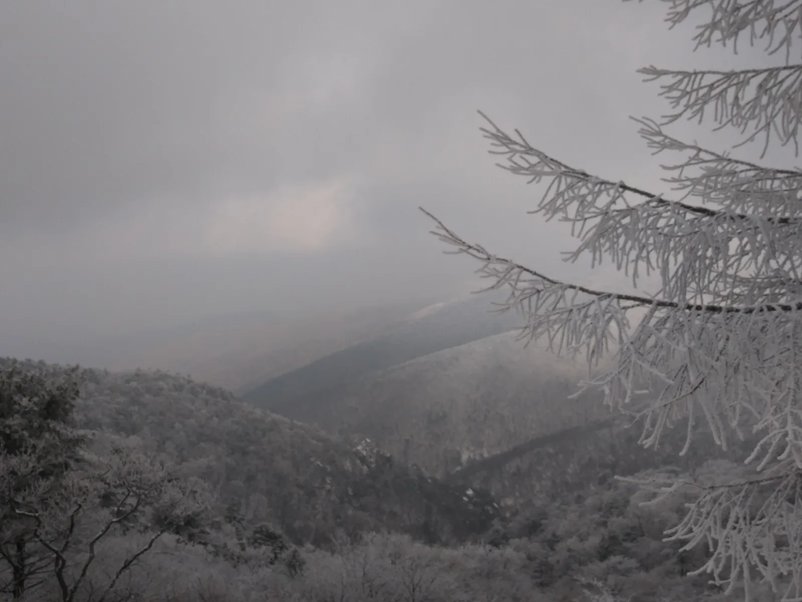
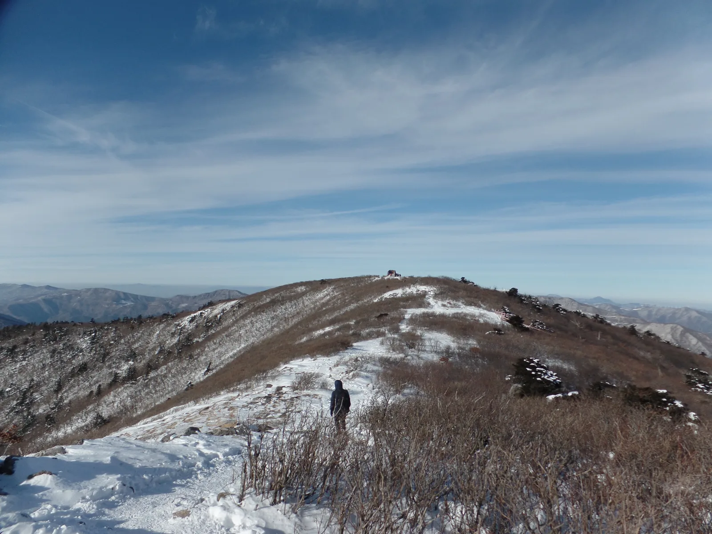
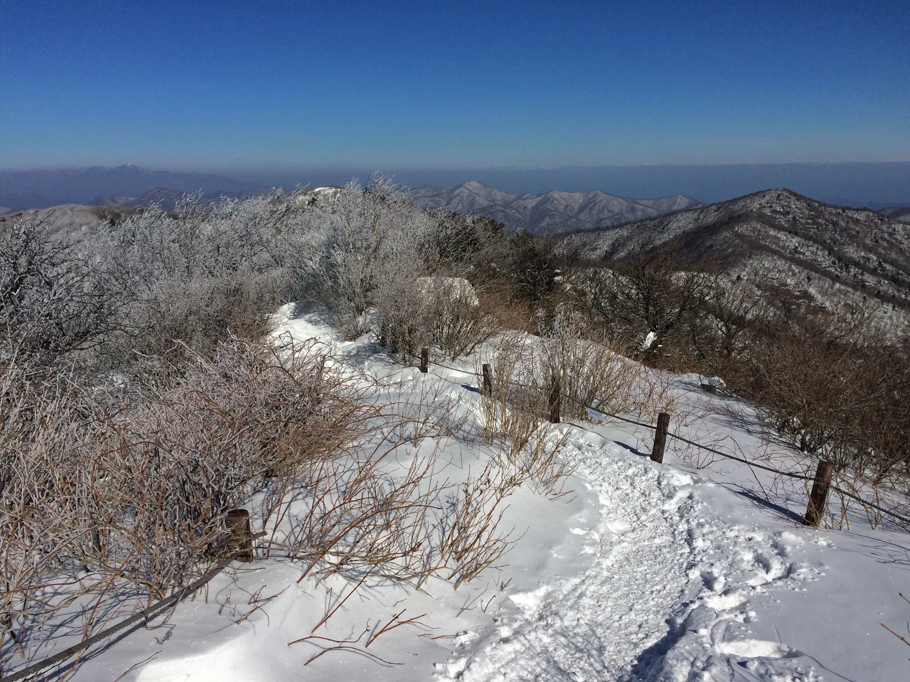
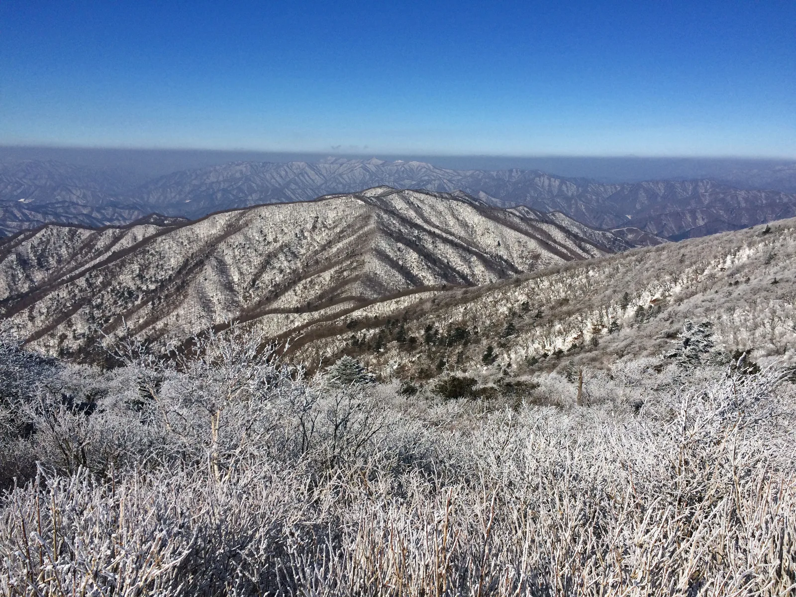

▲ 상고대는 안개나 구름 속 물방울이 나뭇가지에 그대로 얼어붙어 만들어진다. 단풍과는 완전히 다른 기상 현상이다
가을 단풍 기사가 슬슬 마무리될 무렵, 강원도 산간에서는 전혀 다른 시즌이 시작될 준비를 한다. 태백산과 오대산의 상고대(서리꽃)다. 단풍이 붉게 물든 나뭇잎이라면, 상고대는 나뭇가지에 하얗게 얼어붙은 얼음 결정이다. 계절도, 필요한 준비물도, 심지어 산에 오르는 이유도 완전히 다르다. 단풍철 산행과 헷갈려 가을 복장으로 나섰다가 낭패를 보는 경우가 적지 않은 만큼, 상고대가 정확히 무엇이고 언제 어떻게 봐야 하는지를 정리했다.
1. 상고대는 단풍이 아닙니다
상고대(霜古臺)는 서리꽃이라고도 불리는 겨울철 자연 현상입니다. 안개나 구름 속에 떠 있는 과냉각 물방울이 영하의 기온에 놓인 나뭇가지에 닿는 순간 그대로 얼어붙으면서 만들어집니다. 눈이 소복이 쌓여 나무를 하얗게 덮는 '눈꽃'이나, 새벽 풀잎에 맺히는 '서리'와는 생성 조건과 모양이 다릅니다. 상고대는 바람이 불어온 방향으로 얼음 결정이 겹겹이 자라나, 나뭇가지 한쪽으로 하얀 깃털이 붙은 듯한 독특한 형태를 만듭니다.
이 카프리즘에도 단풍철 산행 기사가 여러 편 있지만, 상고대는 그것들과 완전히 다른 계절 이야기입니다. 단풍이 절정을 지나 낙엽이 다 떨어진 뒤, 산이 한 번 더 다른 얼굴을 보여주는 시기입니다.

▲ 태백산 능선. 단풍이 진 자리에 눈과 상고대가 들어서면서 전혀 다른 풍경이 펼쳐진다 ⓒ Wikimedia Commons / Jyuri08 (CC BY-SA 3.0)
2. 언제, 어떤 날씨에 생기나
상고대는 아무 겨울날에나 생기지 않습니다. 기본 조건은 영하의 기온과, 나뭇가지에 닿을 수 있는 수분(안개·구름)이 동시에 있어야 한다는 것입니다. 고지대 능선은 구름층에 자주 들어가기 때문에, 평지보다 상고대가 만들어질 조건을 훨씬 자주 만납니다. 태백산·오대산처럼 해발 1,500m급 능선이 이 현상의 주요 무대가 되는 이유입니다.
다만 지속 시간은 짧습니다. 해가 뜨고 기온이 오르거나 바람이 강해지면 상고대는 녹거나 떨어져 나갑니다. 그래서 상고대 산행은 대체로 이른 아침 시간대에 조망이 가장 좋다고 알려져 있으며, 전날 밤 흐리거나 안개가 낀 뒤 맑게 갠 아침을 노리는 것이 기본 전략입니다.

▲ 오대산 비로봉 능선의 탐방로. 상고대는 해가 오르면 녹아내리기 때문에 이른 아침 조망이 가장 좋다 ⓒ Wikimedia Commons / Lcarrion88 (CC BY-SA 4.0)
3. 태백산 — 천제단과 주목군락
태백산은 국내를 대표하는 상고대·눈꽃 산행지로 꼽힙니다. 정상부의 천제단(국가민속문화유산)과, '살아서 천년 죽어서 천년'이라 불리는 주목 군락이 상고대와 어우러지는 풍경으로 유명합니다. 주목은 고사한 뒤에도 오랫동안 형태를 유지하는 나무라, 살아 있는 나무와 죽은 나무 모두에 상고대가 맺히는 독특한 장면을 만듭니다.
대표 코스는 두 가지입니다. 유일사 코스는 유일사탐방지원센터에서 유일사·장군봉을 거쳐 천제단까지 오르며, 왕복 약 8~9km입니다. 당골 코스는 당골광장에서 반재·망경사를 지나 천제단으로 오르는 길로, 경사가 다소 완만한 편으로 알려져 있습니다. 유일사에서 천제단을 거쳐 당골로 내려오는 종주 코스(약 7.5km, 4시간 안팎)를 택하는 방문객도 많습니다.

▲ 태백산 유일사 입구. 겨울 성수기에도 산불예방 캠페인과 통제 안내가 함께 진행된다 ⓒ 천지일보
4. 오대산 — 비로봉 능선과 전나무숲은 다른 코스입니다
오대산은 두 가지 완전히 다른 경험을 제공하는 산입니다. 하나는 주봉인 비로봉(1,563m) 능선 산행으로, 상원사에서 출발해 중대사자암·적멸보궁을 지나 비로봉 정상까지 오릅니다. 주목 군락과 능선의 상고대가 이 코스의 핵심입니다.
다른 하나는 월정사 전나무숲길입니다. 월정사 일주문에서 금강교까지 이어지는 평탄한 숲길로, 상고대 산행과는 전혀 다른 코스입니다. 눈이 쌓인 전나무숲도 겨울철 볼만하지만, 이곳은 능선이 아니라 계곡 초입이라 상고대보다는 설경에 가깝습니다. "오대산 갔다 왔는데 상고대를 못 봤다"는 후기 상당수가 이 두 코스를 헷갈린 경우입니다.

▲ 오대산 비로봉 능선. 상원사에서 오르는 코스가 상고대 산행의 핵심이며, 월정사 전나무숲길과는 다른 코스다 ⓒ Wikimedia Commons / Lcarrion88 (CC BY-SA 4.0)
| 산 | 코스 | 거리·시간(왕복 기준) | 핵심 포인트 |
|---|---|---|---|
| 태백산 | 유일사 코스 | 약 8~9km | 천제단·주목군락 |
| 당골 코스 | 약 8km, 경사 완만 | 망경사 경유 | |
| 오대산 | 상원사~비로봉 | 약 7km 안팎 | 적멸보궁·능선 상고대 |
| 월정사 전나무숲길 | 왕복 약 3km, 평탄 | 계곡 설경(상고대 아님) |
※ 거리·시간은 참고용이며, 실제 소요시간은 적설량과 결빙 상태에 따라 크게 달라질 수 있습니다.
5. 산불조심기간과 겹치는 초입 시즌
상고대 시즌 초입은 가을철 산불조심기간과 맞물립니다. 산림보호법에 따라 산림청이 매년 별도로 공고하는 기간으로, 표준 기준은 11월 1일~12월 15일이지만 그해 기상·건조 상황에 따라 시작일이 10월 중순~하순까지 앞당겨지기도 합니다(2025년 가을철은 10월 20일~12월 15일로 공고됨). 이 기간 설악산·오대산국립공원의 고지대 탐방로는 산불 예방을 위해 출입이 통제됩니다. 오대산의 경우 적멸보궁~두로령, 구룡폭포~동피골 등 일부 구간이 통제 대상에 포함된 바 있습니다.
다만 상원사~비로봉으로 이어지는 능선 등정로 자체가 매번 전면 통제되는 것은 아니며, 통제 구간은 산불 위험도에 따라 해마다 공단이 다시 공고합니다. 상고대가 가장 짙어지는 시기는 대체로 통제 기간이 끝나는 12월 중순 이후이므로, 시즌 초반보다는 이 시점 이후 일정을 잡는 편이 통제 변수를 피하는 데 유리합니다. 어느 쪽이든 출발 전 국립공원공단 홈페이지(knps.or.kr) 공지로 해당 시즌의 정확한 통제 구간과 기간을 확인해야 합니다.
6. 준비물과 접근
겨울 능선 산행은 가을 단풍 산행과 준비물이 다릅니다. 정상부 체감온도가 영하 20도 아래로 떨어지는 경우가 흔하고, 다져진 눈길은 미끄럽기 쉽습니다. 아이젠과 스패츠, 방풍·방한 재킷, 여벌 장갑은 기본으로 챙겨야 합니다. 하산 구간에 가파른 내리막이 포함된 코스가 많아 등산 스틱도 도움이 됩니다.
차량으로 접근할 경우 태백산 유일사·당골 진입로와 오대산 상원사 진입도로는 겨울철 결빙 구간이 발생할 수 있습니다. 스노체인이나 겨울용 타이어를 준비하고, 오전 일찍 움직이는 만큼 전조등·워셔액 등 기본 점검도 함께 해두는 것이 좋습니다.
국립공원공단은 탐방로별로 '입산시간지정제'를 운영해 겨울철 입산 가능 시각을 별도로 정해 둡니다. 예를 들어 설악산 고지대 탐방로는 동절기(10월~이듬해 4월) 기준 새벽 4시부터 정오까지만 입산이 허용되는 식으로, 산과 코스마다 기준이 다릅니다. 태백산·오대산 역시 해당 국립공원 홈페이지나 현장 지킴터 안내판에서 그 시즌의 정확한 입산·하산 마감 시각을 반드시 확인해야 합니다.
7. 정리
체크포인트
- 상고대는 단풍(10월)과 완전히 다른 계절의 현상이다. 첫눈 직후인 11월 말부터 시작해 12월~2월이 본격 시즌이다.
- 태백산은 천제단·주목군락(유일사·당골 코스), 오대산은 비로봉 능선(상원사 코스)이 핵심이며, 오대산 월정사 전나무숲길은 상고대 코스가 아니다.
- 맑은 이른 아침에 조망이 가장 좋다. 해가 오르거나 바람이 강해지면 녹아내린다.
- 시즌 초입(대략 11월~12월 중순, 해마다 산림청이 별도 공고)은 산불조심기간 탐방로 통제와 겹칠 수 있어 출발 전 국립공원공단 공지 확인이 필요하다.
- 아이젠·스패츠·방풍복은 필수이며, 진입 도로 결빙에 대비해 스노체인이나 겨울용 타이어를 준비해야 한다.